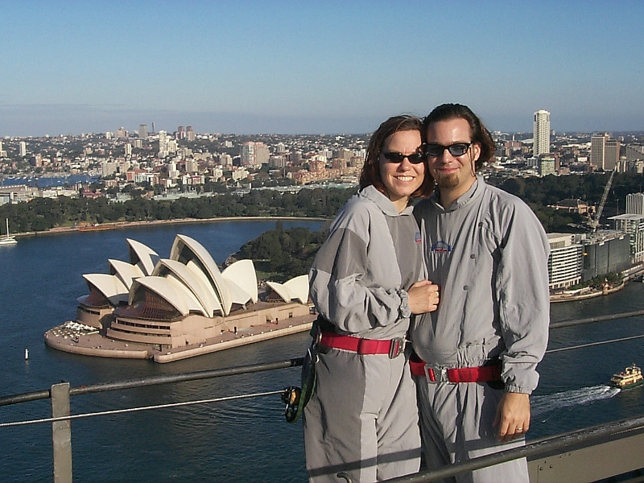

<!DOCTYPE HTML PUBLIC "-//W3C//DTD HTML 4.0 Transitional//EN">


<html>
<head>
        <title>Top of the Syndey Harbour Bridge</title>
</head>
</html>

<body bgcolor="#000000">
<br><br><br>
<div align="center"></div>
<br><br>
<font size="+1"><div align="center"><b><font color="Gray">On top of the Syndey Harbour Bridge</font></b></div></font>
<br>
<font size="+1"><div align="center"><b><font color="Gray">Sydney, Australia - April 17 1999</font></b></div></font>
<br><br><br><br><center>
